Verkefni 2 felur í sér að hanna parametríska hönnun á pressfit hlut
Hugmynd að hlut - skrifað 10. janúar 2020
Ég byrjaði verkefni 2 á að brainstorma hugmynd að hlut sem ég vildi hanna, ég fór í gegnum margar myndir á google og skoðaði verkefni sem aðrir hafa gert. Eftir svolítinn tíma ákvað ég að búa til
einfaldan kassa en kassann sem ég hugsaði mér til þess að byrja með átti að vera einhvað svipaður þessum:
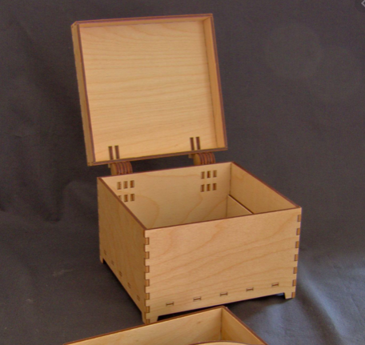
Ég taldi þessa hönnun vera geranlega fyrir þetta verkefni mér fannst kassinn vera mjög flottur, ég ætlaði ekki að hanna nákvæmlega eins kassa, ég hugsaði mér að kannski væri sniðugt að gera
kassann án þess að hafa lok þar sem ég taldi það vera nokkuð flókið svona í fyrstu hugsun. Þegar ég var ákveðinn í þessu þá var næsta skref að ákveða hvaða forrit ég skildi nota við teikningu
á kassanum.
Freecad - skrifað 10. janúar 2020
Næsta skrefið í ferlinu var að ákveða hvaða forrit ég skildi nota við hönnun á kassanum, ég fór inn á vefsíðu Hafliða og skoðaði hvaða CAD hugbúnað hann mældi með fyrir hönnunina.
Haflði mældi með 2. forritum, bæði Freecad og Fusion 360. Mér fannst frekar áhugavert að Freecad væri open source og frítt að niðurhala því, það virkaði einnig vel í Macbook tölvunni minni og því
þæginlegt að vinna verkefnið heima fyrir. Ég tók þá ákvörðun um að ég skildi nota Freecad og því var ekki aftursnúið. Ég byrjaði að setja það upp og fiktaði við það í daggóðan tíma. Mér leyst
bara mjög vel á það. Ég skoðaði því næst Video sem ég fann á netinu og fylgdi því alveg í gegn. Í videoinu var sýnidæmi um parametríska hönnun á kassa, ekkert ósvipuðum og ég hafði hugsað mér að gera
og því þæginlegt að fylgja því alveg í gegn.
Hönnun á kassa í Freecad - skrifað 10. janúar 2020
Í freecad byrjaði ég á að skilgreina parametra á kassanum eins og sýnt er á mynd:
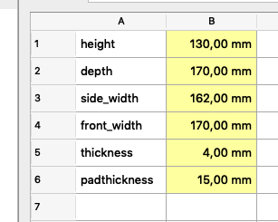
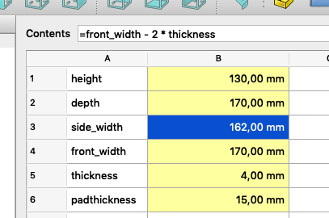
Eins og sjá má er parameterinn side_width styttri heldur en front_width en það stafar að því að hægri og vinstri hlið kassans þarf að vera með styttri breidd til þess að kassinn
getur passað saman. næst teiknaði ég eftirfarandi kassa, bjó til skorður og skilgreindi rétta parametra. Þetta gerði ég fyrir allar hliðarnar.
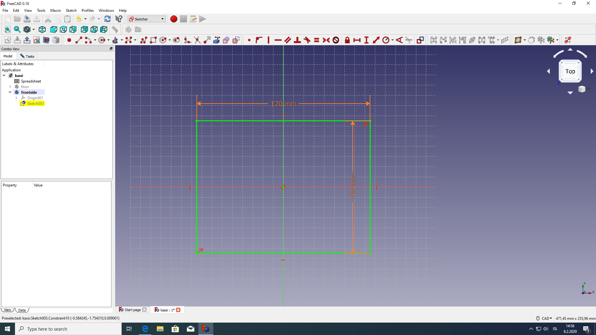
Því næst "extrudeaði" ég kassann sem ég teiknaði og hann fékk parameterinn "thickenss" sem eru 4mm. þetta gerði ég líka fyrir allar hliðarnar.
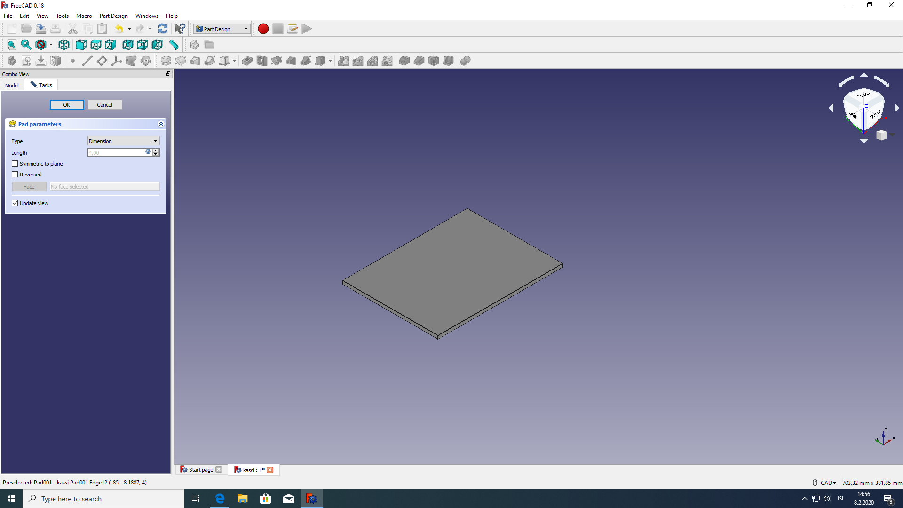
Næsta skref var svo að búa til "fingers" á kassann en tilgangur þeirra er að láta kassann passa saman. Ég gerði það með eftirfarandi hátt:
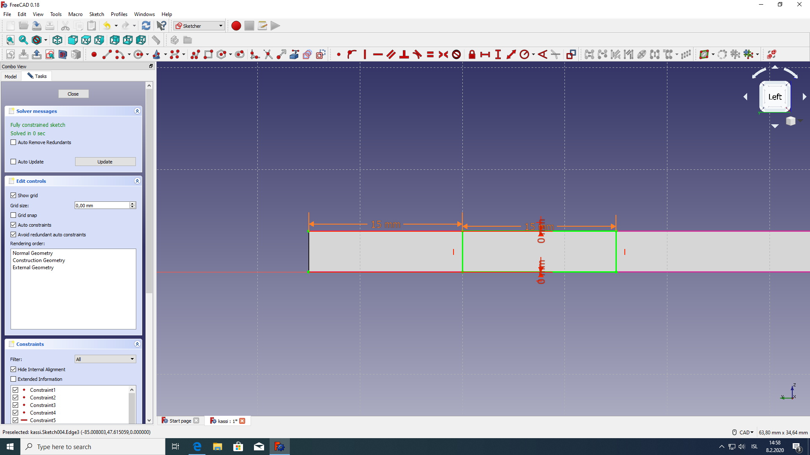
Hér má sjá að vegalengdinga frá byrjun fingers frá brún, en vegalengdin er parameterinn "padthickness" sem er 15 mm.
Næsta var það svo að fá fingers á alla hliðina, en það gerði ég með linear array og mirror í Freecad:
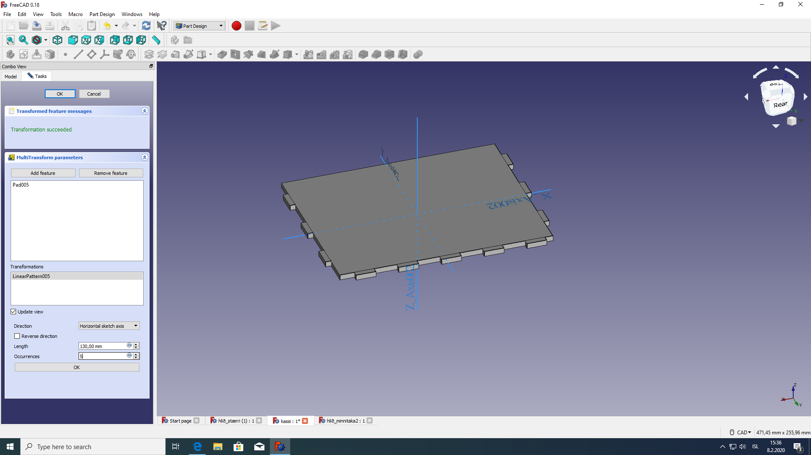
Hér má sjá að fingers ná út 130 mm frá vegalengdinni padthickness, ég setti 5 fingers á langhlið og 3 á minni hliðina. Lokaniðurstaðan af einni hlið var svo þessi:
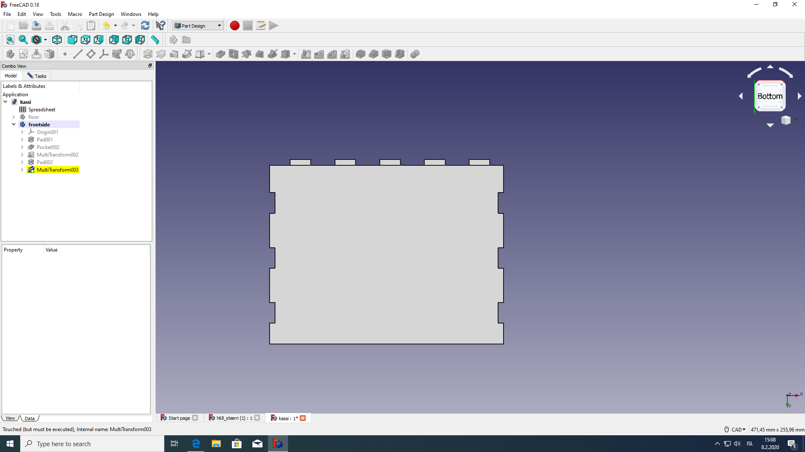
Vandræði í Freecad, breyt yfir í Fusion 360 - Skrifað 2.mars 2020
Eftir að vera komin áleiðis með hönnunina í Freecad fer forritið að crasha í macbook air tölvunni minni. Ég reyni ýmislegt til þess að fá það til að virka en án árangurs. Það leið ekki að löngu
þangað til ég ákvað að bíta í það súra epli að þurfa að byrja frá grunni í Fusion. Þá hófst nýtt ferli að læra á það og tafði þetta mikið fyrir mér. Hér fyrir neðan verður lýst hvernig ferlið var
hjá mér að hanna kassa í Fusion.
Parametrar - Skrifað 2.mars 2020
Eins og áður þá byrjaði ég á því að skilgreina parametra, en þá má sjá á eftirfarandi mynd:
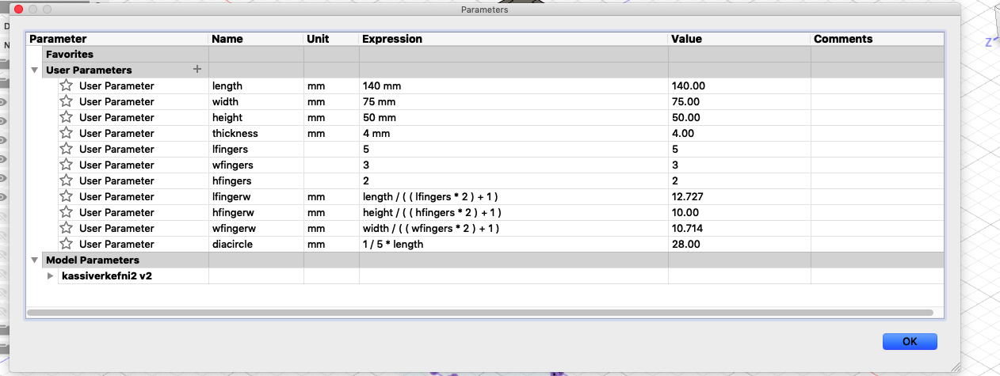
parametrarnir width, length og height lýsa breidd, lengd og hæð kassans. Thickness lýsir þykkt á plötunnar sem er notuð til þess að búa til kassann en í mínu tilfelli notaði ég krossvið
með þykktina 4 mm. Lfingers, wfingers og hfingers er parameter sem lýsir fjölda á hverri hlið kassans. lfingerw, hfingerw og wfingerw lýsir síðan vegalengdinni sem fingurnir spanna yfir hverja hlið.
Diacircle er síðan parameter sem lýsir stærð gats sem er á toppi kassans.
Hönnun á kassanum í Fusion 360 - Skrifað 3. mars 2020
Eftir að vera búin að skilgreina parametrana var ekkert annað í stöðunni en að byrja að hanna hlutinn. Ég byrjaði á að gera botninn, teiknaði kassa og skilgreindi lengdir:
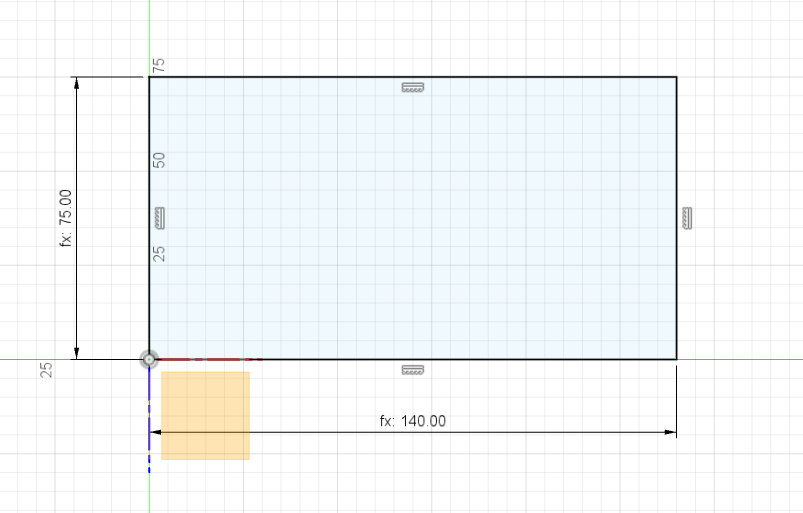
Næst extrudeaði ég og notaði þykktina 4mm, á eftir því bjó ég til fingers og skilgreindi lengdir:
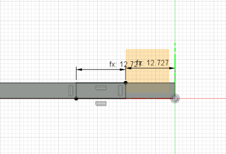
Síðan þurfti ég að extrude einn finger og búa til "linear" pattern með fjöldi fingra á hverri hlið, þetta svipar mjög til freecad. Botninn má síðan sjá hér að neðann:
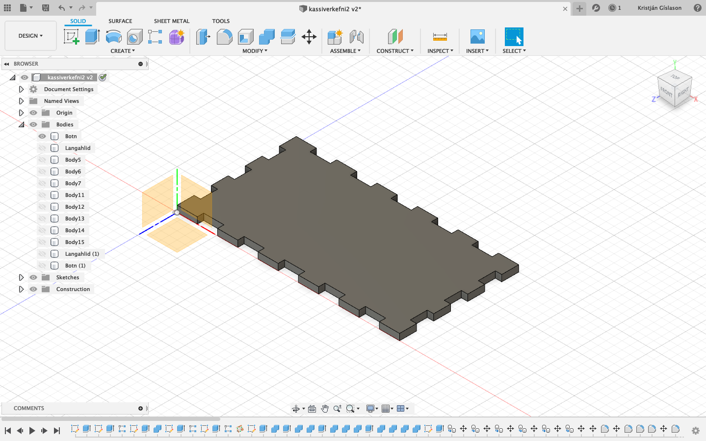
Þetta gerði ég síðan fyrir allar hliðar og topp kassans. ég þurfti að passa að kassinn passaði saman svo það var mikilvægt að skilgreina alla fingur með sömu þykkt en það er akkurat þykkt
kassans sem eru 4 mm. Heildarútkomuna má sjá hér að neðan:
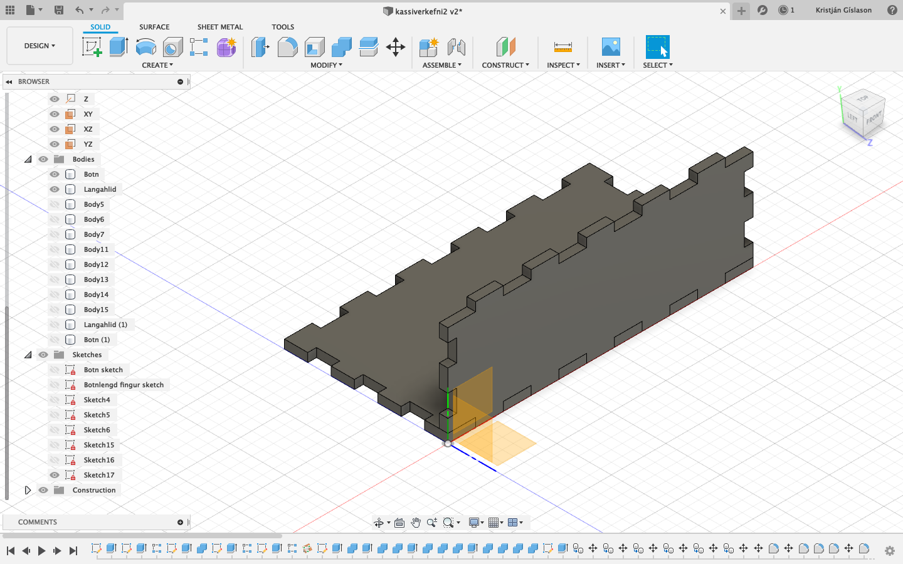
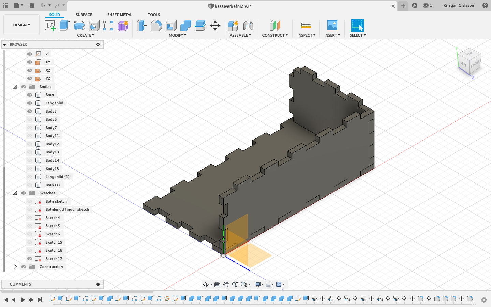
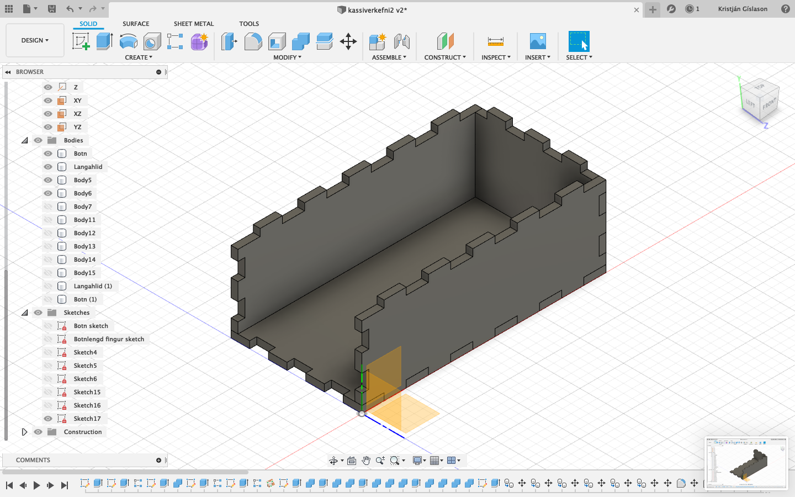
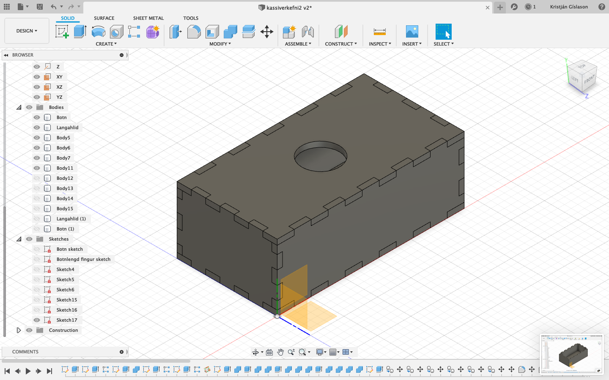
Hringurinn á toppi kassans var búin til á mjög einfaldann hátt. Ég teiknaði hring í miðju kassans eftir á toppi hans. Ég skilgreindi svo þvermálið með parametranum sem ég hafði
búið til áður. Ég þurfti að búa til sér plan ofan á kassanum til þess að gera þetta.
Inkscape, laseskurður og fablab- Skrifað 3. mars 2020
Eftir að ég hafði lokið við að gera kassann þurfti ég að koma sketch fileunum í Fusion 360 yfir í inkscape. Ég gerði það með því að búa til nýja sketch mynd af hverjum body sem ég hafði búið til.
Ferlið er eftirfarandi: Hægri smelli á body -> isolate -> vel plan á þeim hlut sem ég einangra -> hægri semlli á planið -> vel prjocet -> ýti á okey. Eftir þetta hef ég búið til nýtt sketch, þetta
gerði ég fyrir allar hliðarnar á kassanum og að sjálfsögðu botninn og toppinn. Þegar þessu var lokið stillti ég upp öllum sketchunum þar sem ég vildi hafa þau, valdi þau öll og gerði save as DXF.
DXF er file sem inkscape les. Hér að neðan má sjá sketchin sett saman í Fusion 360:
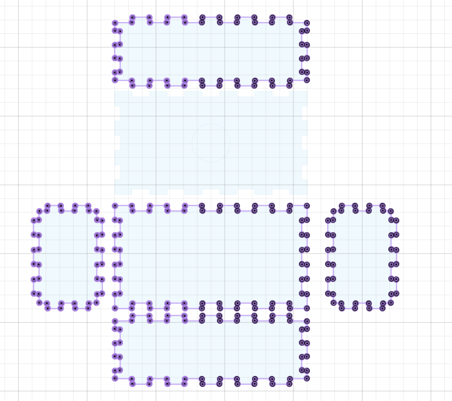
Hér að neðan má síðan sjá sketch komið yfir í inkscape.
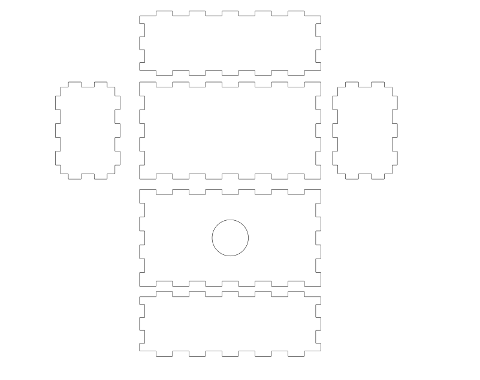
Þar sem að ég notaði Fusion 360 en ekki inventor þurfti ég ekki að lagfæra neinar línur í inkscape, það eina sem ég þurfti að gera var að importa filenum. Þegar þetta var klárt var ekkert
annað í stöðunni en að skella sér í Fablab. Þar var tekið á mótir mér og ég fékk alla þá hjálp sem ég þurfti á að halda. Ég byrjaði á að setja teikninguna í inkscape inná blaðið sem er staðsett þar inni.
Eftir það skilgreindi ég stærðina á blaðinu en maður þarf að taka tillit til laserskurðarvélinnar þegar maður gerir það. Því næst exportaði ég filenum í inkscape frá DXF og yfir í PDF og setti
fileinn síðan á usb lykil. USB lykilinn var síðan komið fyrir í tölvu við hliðina á laserskurðarvélinni. Þar þurfti maður að stilla ýmislegt en þetta má sjá á mynd hér að neðan:
Næst var það síðan að stilla núllpunktinn á laserskurðarvélinnar. Ég byrjaði á því að stilla z-ásinn, en z-ásinn átti að sjálfsögðu að vera alveg við krossviðsplötuna. Síðan skilgreindi ég
x og y ásinn en það gerði ég með því að færa oddin alveg út í horn krossviðsplötunar. Krossviðsplatan, oddurinn og vélin sjálf má sjá hér að neðan:
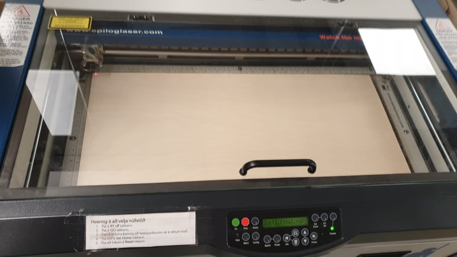
Síðan byrjaði vélina að skera:
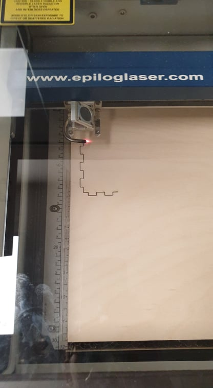
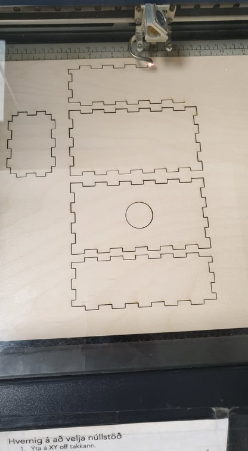
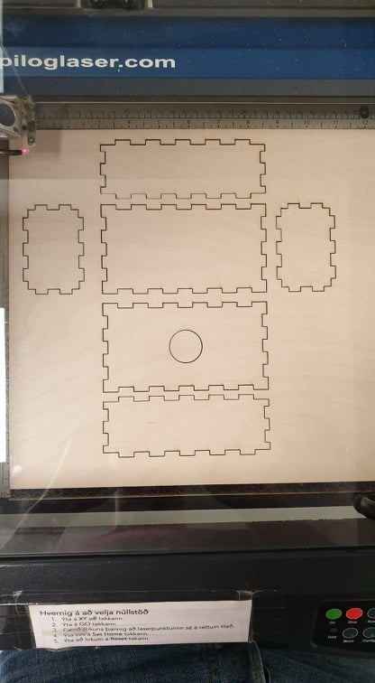
Lokaeintakið leit síðan svona út:
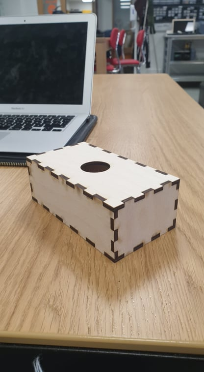
Linkar sem ég notaði í gegnum verkefnið
https://www.youtube.com/watch?v=lf-up4UjG58
https://www.freecadweb.org/downloads.php
https://www.google.com/search?q=press-fit+construction+kit+box&tbm=isch&ved=2ahUKEwjY162t1brnAhUHghoKHddjDSYQ2-cCegQIABAA&oq=press-fit+construction+kit+box&gs_l=img.3...2095.3927..4087...1.0..0.598.1701.1j1j0j1j0j2......0....1..gws-wiz-img.pHuKYfRtJak&ei=Ktc6XtiaG4eEatfHtbAC&bih=967&biw=1904&hl=is#imgrc=qAGx1OQ01oMqYM&imgdii=_obFASmO6wv4AM
https://www.youtube.com/watch?v=_pITOzeqJ0Y
https://www.youtube.com/watch?v=Zv1ydYdrU-g
https://www.youtube.com/watch?v=pMjOq4_FGYc
https://www.youtube.com/watch?v=vBpBJdXZF4s
https://vimeopro.com/academany/fab-2019/video/314594035
https://www.youtube.com/watch?v=9U2JPfkQpsE
https://www.youtube.com/watch?v=zN0jkUGdObw